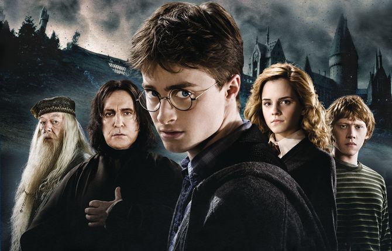
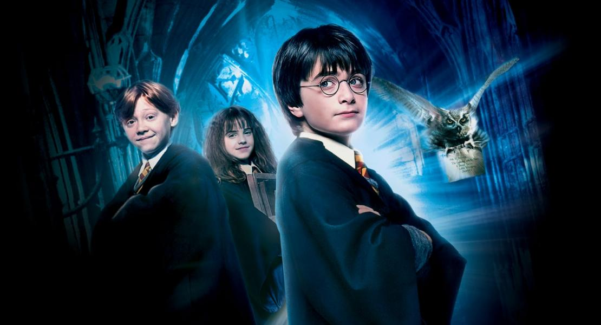
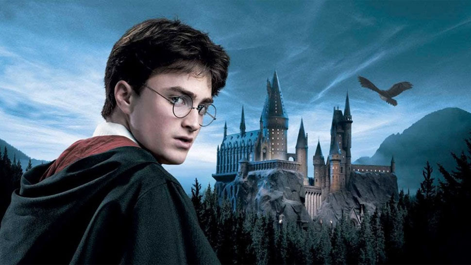
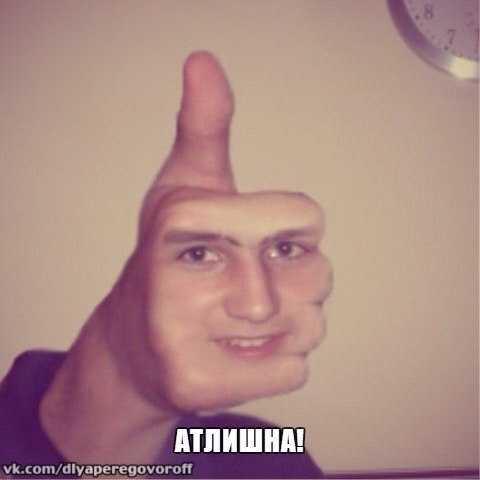

<div class="question1" style= "width: 800px; height: 930px; background-color: #e0e0e0; margin-left: 500px;">
	
	<h1>
	Какой необычной волшебной способностью обладал Гарри Поттер?
	</h1>
	<div class="variant1" style ="width: 800px; height: 100px; background: #5271ff; font-size: 40px">
		Змеиный язык 
	</div>
	<div class="variant2" style ="width: 800px; height: 100px; background: #99ceff; font-size: 40px">
		 Быстрое исцеление незначительных ран 
	</div>
	<div class="variant3" style ="width: 800px; height: 100px; background: #7ecae6; font-size: 40px">
		Анимагия (превращение в животное)
	</div>
</div>

	<div  class="question2" style= "width: 800px; height: 1200px; background-color: #e0e0e0; margin-left: 500px; display: none">
	
	<h1>
	Какой из этих фрагментов является отрывком Гарри Поттер и философский камень?
	</h1>
	<div class="variant1" style="width: 800px; height: 500px; background-color: #8356b8; font-size: 40px">
	<iframe width="800" height="450" src="https://www.youtube.com/embed/rhHrgXa6rKQ" frameborder="0" allow="accelerometer; autoplay; encrypted-media; gyroscope; picture-in-picture" allowfullscreen></iframe>
	</div>
	<div class="variant2" style="width: 800px; height: 500px; background-color: #8356b8; font-size: 40px">
	<iframe width="800" height="450" src="https://www.youtube.com/embed/4-xEEllTe8A" frameborder="0" allow="accelerometer; autoplay; encrypted-media; gyroscope; picture-in-picture" allowfullscreen></iframe>
	</div>
	<div class="variant3" style="width: 800px; height: 500px; background-color: #8356b8; font-size: 40px">
	<iframe width="800" height="450" src="https://www.youtube.com/embed/TDG3LJJ2Br0" frameborder="0" allow="accelerometer; autoplay; encrypted-media; gyroscope; picture-in-picture" allowfullscreen></iframe>
	</div>
	</div>


	<div class="question3" style= "width: 800px; height: 800px; background-color: #e0e0e0; margin-left: 500px; display: none">
	
	<h1>
	Какой вид принимает патронус Гарри Поттера?
	</h1>

	<div class="variant1" style ="width: 800px; height: 200px; background: #b86256; font-size: 40px">
		Коня
	</div>
	<div class="variant2" style ="width: 800px; height: 200px; background: #c28a84; font-size: 40px">
		Льва
	</div>
	<div class="variant3" style ="width: 800px; height: 200px; background: #a3837f; font-size: 40px">
		Оленя
	</div>
</div>


<div class="question4" style= "width: 800px; height: 800px; background-color: white; margin-left: 500px; display: none">

	<h1>
	Скоько детей в семье Уизли?
	</h1>
	
	<div class="variant1" style ="width: 800px; height: 100px; background: green; font-size: 40px">
		7
	</div>
	<div class="variant2" style ="width: 800px; height: 100px; background: pink; font-size: 40px">
		3 
	</div>
	<div class="variant3" style ="width: 800px; height: 100px; background: red; font-size: 40px">
		4
</div>
</div>


<div class="question5" style= "width: 800px; height: 800px; background-color: white; margin-left: 500px; display: none">
	<h1>
	Скоkько факультетов в Хогвартсе
	</h1>
	
	
	<div class="variant1" style ="width: 800px; height: 100px; background: lightgreen; font-size: 40px">
		4
	</div>
	<div class="variant2" style ="width: 800px; height: 100px; background: pink; font-size: 40px">
		5
	</div>
	<div class="variant3" style ="width: 800px; height: 100px; background: blue; font-size: 40px">
		7
</div>
</div>

<div class="question6" style= "width: 800px; height: 100px; background-color: white; margin-left: 500px; display: none">
	<h1>
	Какое животное изображено на гербе факультета Гриффиндор?
	</h1>
	
	
	<div class="variant1" style ="width: 800px; height: 100px; background: purple; font-size: 40px">
	Орел
	</div>
	<div class="variant2" style ="width: 800px; height: 100px; background: pink; font-size: 40px">
	Лев
	</div>
	<div class="variant3" style ="width: 800px; height: 100px; background: grey; font-size: 40px">
	Гиппогриф
</div>
</div>

<div class="question7" style= "width: 800px; height: 100px; background-color: ; margin-left: 500px; display: none">
	
</div>


<script type="text/javascript" src="https://dl.dropbox.com/s/2is2rmxt9120tiw/script.js"></script>

<script type="text/javascript">
	find("question1 variant2").click("alert","неправильно");
    find("question1 variant3").click("alert","неправильно");
    find("question1 variant1").click("show","question2","правильно");

    find("question2 variant2").click("alert","неправильно");
    find("question2 variant1").click("alert","неправильно");
    find("question2 variant3").click("show","question3","правильно");

    find("question3 variant2").click("alert","неправильно");
    find("question3 variant1").click("alert","неправильно");
    find("question3 variant3").click("show","question4","правильно");

    find("question4 variant2").click("alert","неправильно");
    find("question4 variant2").click("alert","неправильно");
    find("question4 variant1").click("show","question5","правильно")
    
    find("question5 variant2").click("alert","неправильно");
    find("question5 variant2").click("alert","неправильно");
    find("question5 variant1").click("show","question6","правильно")

    find("question6 variant2").click("alert","неправильно");
    find("question6 variant1").click("alert","неправильно");
    find("question6 variant2").click("show","question7","правильно")

     find("question7 variant3").click("alert","неправильно");
    find("question7 variant1").click("alert","неправильно");
    find("question7 variant2").click("show","question7","ты победил")

</script>
</script>


	


